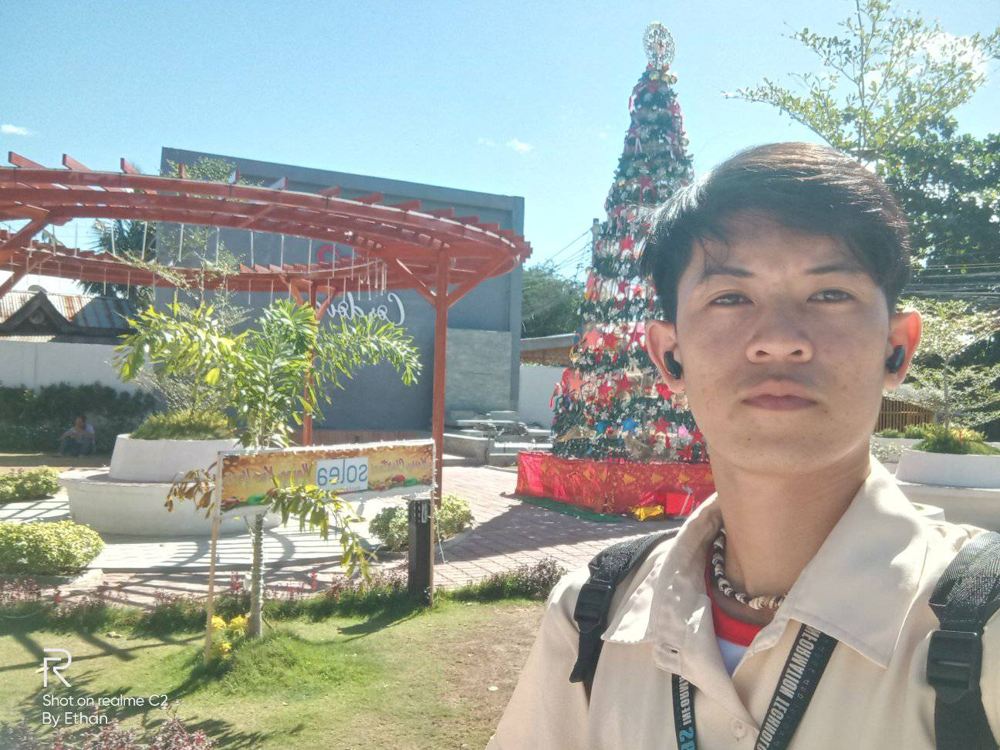

Plaza
As Gen Z have been continuously going out, filling spaces to the community, and making extra impact to society, Cordova is also at the trend of that change. We have a new plaza.

This still situated in front of the church beside the Poblacion barangay hall. The newly renovated plaza feels welcoming to everyone. You feel that there is no barrier as if you are part of the space made. This serves as waiting area for some, dating area for lovers who displays their affection publicly, and a playground to most kids. Aside, there are students who do their school practices in the area. There was a time in the past that this plaza has become the center of the crime though this is just few steps away from Codova Police Station. Many were robbed. Some do their negotiations relating to sex trafficking. That is why, this seems like barren for quite sometime. Forgotten. Or dead to some. But with the rise of new leader, change has also made. Just like the new administration headed by Mayor Cesar Suan this change is welcomed by Cordovanhons with hope and positivity.